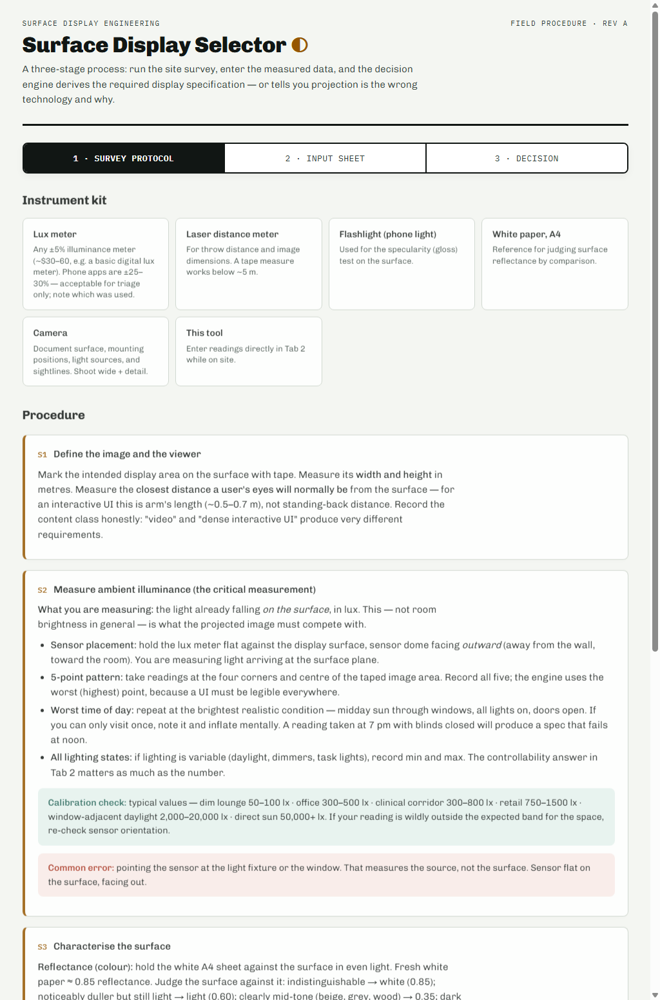
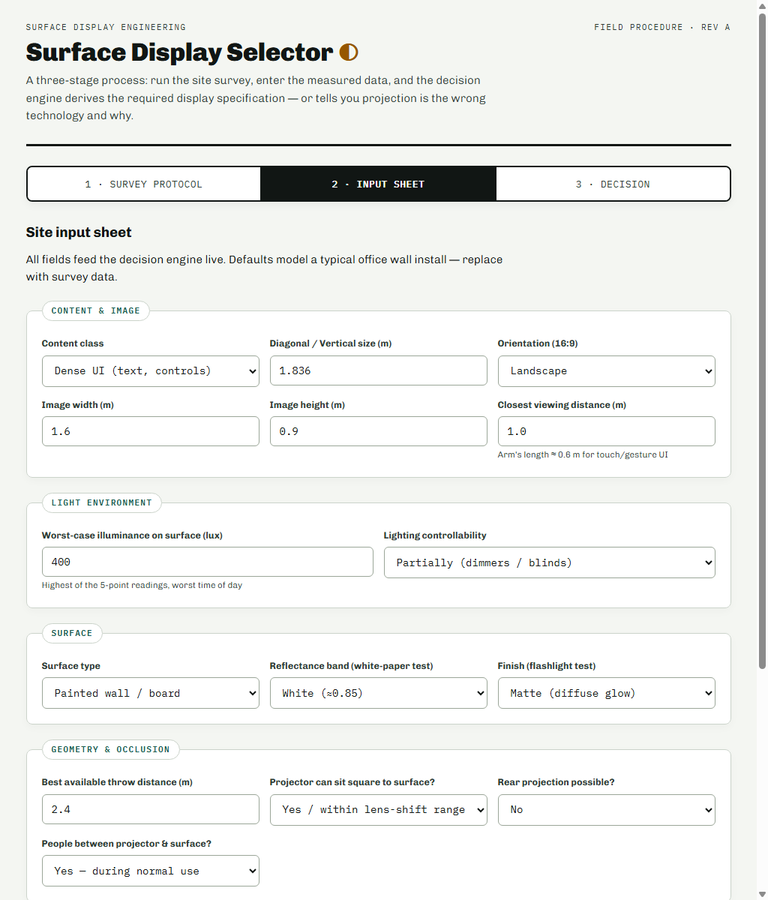
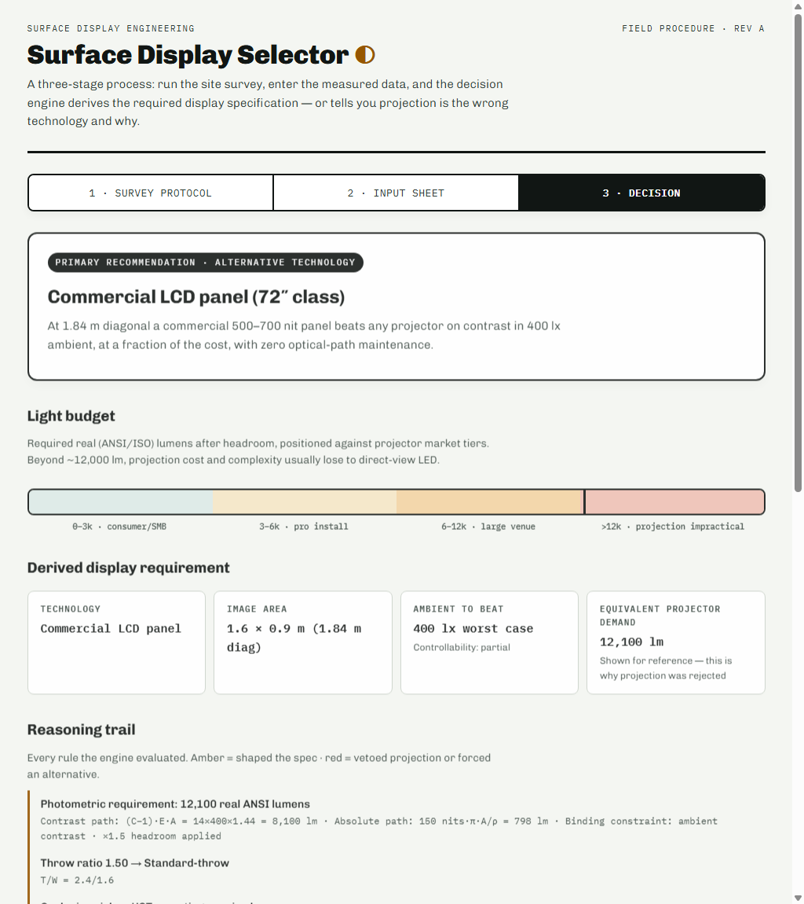
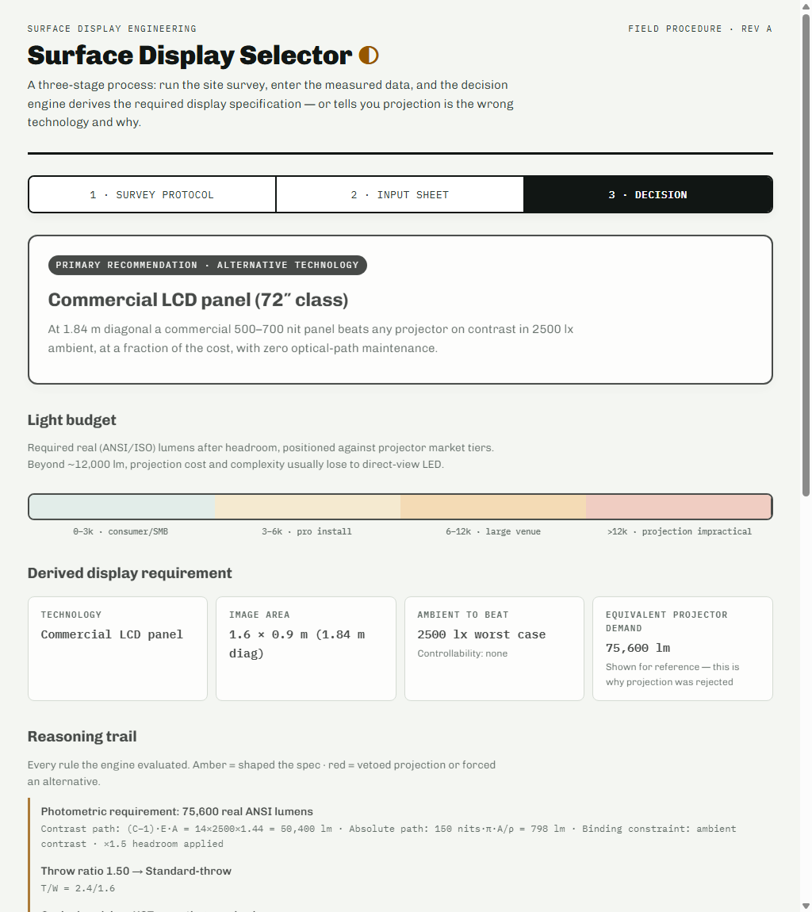

Surface Display Engineering
Standard Operating Procedure
Surface Display Selector ◐
Site Survey Protocol, Data Entry, and Photometric Decision Engine User Guide
Document Purpose
This document details the standardized field procedure for evaluating physical projection surfaces, measuring
ambient lighting conditions, and executing the Surface Display Selector decision engine. It outlines
mathematical formulas used to derive lumens, throws, and resolutions to ensure high-fidelity UI legibility.
Executing an accurate physical site survey is the absolute prerequisite for successful projection design. Standard room
lighting and projection surface properties dictate whether projection will succeed or fail.
Instrument Kit
Every surveyor must carry and utilize the standard survey kit:
- Lux Meter: Any calibrated digital lux meter (±5% accuracy). Smartphone lux meter apps are for triage only and are prone to ±30% sensor errors.
- Laser Distance Meter: Used for measuring throw distance, image height, image width, and viewing sightlines.
- Flashlight: For the surface specularity (gloss) test.
- White A4 Paper Sheet: Serving as a reference for reflectance comparison.
- Camera: Documenting context, mounting angles, and surrounding light sources.
Step-by-Step Procedure
-
S1: Define the Image and Viewer. Mark the target display boundaries with low-tack tape. Measure the width (W) and height (H) in meters. Measure the closest viewing distance (D) — for interactive touch systems, this is typically arm's length (0.5m - 0.7m). Define the content class carefully (Video vs. Dense UI).
-
S2: Measure Ambient Illuminance. Place the lux meter dome flat against the wall, facing out toward the room (measuring light arriving at the surface). Take 5-point readings (4 corners + center). Capture readings under worst-case scenario (e.g., mid-day sun, blinds open, overhead lights full).
-
S3: Characterise the Surface. Hold the A4 white paper (approx. 0.85 reflectance) next to the wall. Estimate surface reflectance: white (0.85), light gray/beige (0.60), mid-tone (0.35), or dark/brick (0.15). Conduct the specularity test by shining the flashlight at a 45° angle to identify glare hotspots.

Figure 1.1: Surface Display Selector - Step-by-Step Field Survey Protocol (Tab 1)
The measured site parameters are entered directly into Tab 2: Input Sheet. These inputs drive the decision engine rules and calculate requirements in real-time.

Figure 2.1: Live Input Sheet displaying parameter fields and defaults (Tab 2)
Parameters & Guidelines
| Parameter |
Default Value |
Engineering Guidance |
| Content Class |
Dense UI |
Select 'Video' for moving imagery, 'Signage' for bold graphics, or 'Dense/Interactive UI' for text-heavy layouts and interactive targets. |
| Image Dimensions |
1.6m × 0.9m |
Physical dimensions of the projected area. W and H determine total area A. |
| Worst-Case Illuminance |
400 lux |
The maximum lux value recorded in the 5-point survey. Office environments typically range from 300 to 500 lx. |
| Surface Reflectance |
White (0.85) |
ρ value. Lower reflectance absorbs more projected light, requiring a brighter projector. |
| Occlusion Risk |
Yes |
Set to 'Yes' if users will stand between the projector and wall. This triggers the mandatory UST (Ultra-Short-Throw) requirement. |
Calibration Check: If you record an ambient illuminance of 0 lux or > 20,000 lux (unless in direct outdoors sun), check sensor calibration. Always multiply foot-candle readings by 10.76 to convert to lux.
The decision engine processes inputs dynamically, evaluating two primary mathematical constraints to derive the necessary luminous flux (ANSI lumens) and display properties.
Lumen Calculation Formulas:
1. Contrast Path: Φ
contrast = (C
target - 1) · E · A
2. Absolute Path: Φ
absolute = L
min · π · A / ρ
3. Binding Lumen: Φ
on-screen = max(Φ
contrast, Φ
absolute)
4. Spec Requirement: Φ
spec = Φ
on-screen · 1.5 [Headroom: 1.25x real-vs-spec, 1.2x lamp aging]
Parameters for Content Classes:
- Video: Ctarget = 8, Lmin = 100 nits
- Signage: Ctarget = 6, Lmin = 200 nits
- Dense UI / Interactive: Ctarget = 15, Lmin = 150 nits
Resolution Acuity limits:
Acuity limit p = D × 0.00029 (representing 1 arcminute of resolution at viewing distance D). For UI content, the system enforces a pixel size ≤ p. The minimum horizontal resolution is calculated as ceil(W / p).

Figure 3.1: Standard Output Verdict, Specification, and Reasoning Trail (Tab 3)
Throw Ratio (TR): Classifies optics based on T/W. Standard ranges: UST (<0.4), Short-throw (0.4–1.0), Standard (1.0–2.1), and Long-throw (>2.1).
Certain physical constraints make projection non-viable. The engine triggers vetoes under these conditions, highlighting them in red on the reasoning trail and advising alternative displays.
Veto Rules and Triggers
- Daylight + UI: Uncontrolled daylight with interactive UI forces alternative tech, as legibility cannot be guaranteed under variable sunlight.
- Lumen Ceiling: When calculated requirement exceeds 12,000 ANSI lumens. Large venue projection becomes economically and logistically impractical compared to direct-view emissive displays.
- Glass without Rear Access: Front projection fails on transparent glass because light passes straight through rather than diffusing.

Figure 4.1: Veto verdict triggered by high ambient daylight conditions, recommending a Fine-pitch LED wall
Alternative Technology Fits
- Commercial LCD Panel: Best fit when image diagonal is ≤ 2.4 meters. Offers much higher contrast, zero optical path maintenance, and better UI clarity in office lighting.
- Fine-Pitch LED Wall: Best fit when calculated lumens or image size exceed projection capabilities. Modular tiles are daylight-proof but demand structural support.
- Transparent LED Film / Rear Projection Film: Standard alternatives when glass surfaces are used. Rear film requires a rear cavity throw path.
Once the decision engine recommends projection and defines the minimum specifications, use the search tools at
projectorcentral.com/projectors.cfm to identify suitable projector models. Follow the mapping below to translate derived specs to search filters:
Field Selection & Mapping
| ProjectorCentral Filter |
Derived Selector Specification Mapping |
| Resolution |
Select the class matching or exceeding derived horizontal pixels (e.g. 1080p for ≥1920 px, 4K UHD for ≥3840 px). |
| Brightness |
Select the lumen range bounding the derived ANSI lumens (e.g., 2000-4000). Ignore marketing "LED lumens" which are inflated. |
| Aspect Ratio |
Select 16:9 (standard widescreen aspect ratio used in site calculations). |
| Lamp Type |
Select Laser or All Solid State if the specification requires sealed DLP optics or a high daily runtime. |
| Type/Application |
Select Conference Room, Classroom, or Large Venue based on the site's environment class. |
| Features (Checkboxes) |
Ultra Short Throw: Check if the derived specification indicates UST optics (e.g. to avoid occlusion).
Vert Lens Shift / Horiz Lens Shift: Check if skewed mounting requires optical shift (essential to preserve UI text sharpness).
Input Lag < 30ms: Check if the content class is interactive UI.
24/7 Duty Cycle: Check if daily runtime exceeds 12 hours.
|
| Throw Distance & Screen Size |
Open this section to verify throw candidates. Convert metric values to Imperial before entering:
• Throw Distance: Enter value in feet (meters × 3.28).
• Screen Size: Enter value in inches Diagonal (diagonal meters × 39.37).
|
Optional Fields: Filters such as Price, Manufacturer, Noise Level, Zoom Range, Audio Power, Weight, or Connection Ports (HDMI/VGA) can be left default or ignored, as they do not affect the primary photometric viability, unless specific local site budget or source pipeline constraints apply.